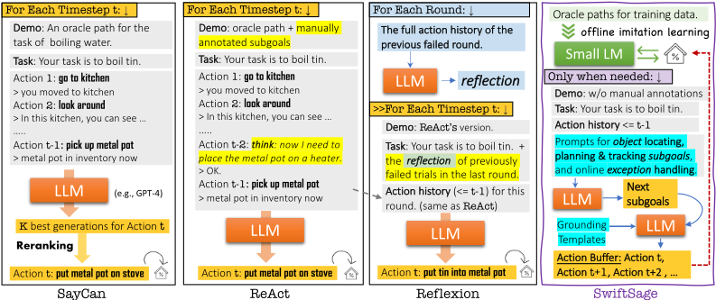
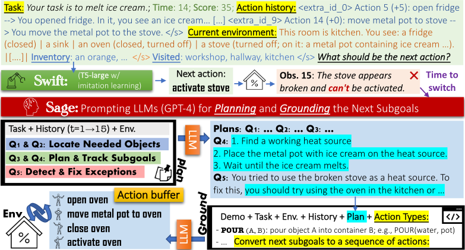
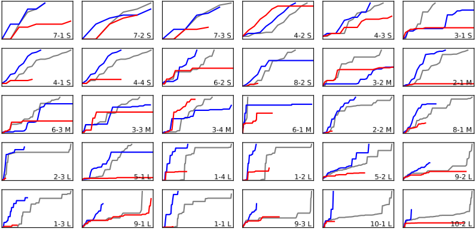
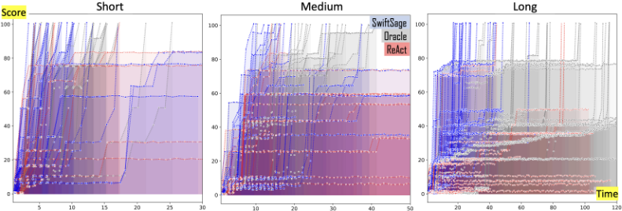

SwiftSage：面向复杂交互式任务的快慢思考生成式 Agent
论文针对复杂交互式推理任务中 Agent 方法的局限：行为克隆/RL 难以做子目标分解、泛化与异常处理，SayCan、ReAct、Reflexion 等 LLM 提示方法每步都需重新推理、成本高且输出难以 grounding。SwiftSage 受认知双过程理论启发：SWIFT 模块用 flan-t5-large（770M）在 oracle 轨迹上行为克隆，承担快速直觉的常规动作；SAGE 模块用 GPT-4 做两阶段提示（规划五问 + 动作模板 grounding）生成 action buffer，负责规划与异常处理；启发式规则在两模块间切换。在 ScienceWorld 30 类任务上取得 84.7 的 SOTA 平均分（ReAct 仅 36.4），每动作仅消耗 757 tokens，约为对比方法的 1/3；换用更弱的 GPT-3.5-turbo 仍保持 62.22 分，鲁棒性更好。其'小模型管常规、LLM 管规划与异常'的分层调用模式、结构化规划提示与 action buffer 机制，可直接借鉴到团队低成本高可靠的 Agent harness 设计中。
如何让 Agent 在需要长程规划、子目标分解、长期记忆、空间推理与异常处理的复杂交互式任务中高效且可靠地完成任务。现有三类方法均有局限：RL 与行为克隆难以分解子目标、泛化到未见任务并处理异常；基于 LLM 提示的方法（SayCan、ReAct、Reflexion）每个时间步都要重新调用 LLM 推理，成本高、效率低，且输出难以 grounding 为可执行动作、缺乏对环境异常的鲁棒处理。
提出受双过程理论启发的双模块框架：SWIFT 模块（System 1，快思考）用 flan-t5-large（770M）在 oracle 轨迹上做行为克隆微调，输入采用 K=10 滑窗的多跳动作历史、访问房间列表、物品栏与当前环境状态的结构化上下文，并通过降采样实现均衡模仿学习，快速输出下一步动作；SAGE 模块（System 2，慢思考）用 GPT-4 做两阶段提示——规划阶段用单个 prompt 一次性回答五个问题（所需物品、获取途径、子目标分解、进度追踪、异常检测与即时修正），grounding 阶段借助形式化动作模板把子目标转换为动作序列（action buffer，约 5 个动作）；再用启发式算法整合：默认走 SWIFT，当动作无效、涉及关键决策、连续 5 步无奖励或观测到异常时切换到 SAGE，buffer 执行完毕后回到 SWIFT。
在 ScienceWorld 基准 30 类任务上，SwiftSage 取得 SOTA 平均分 84.7，显著超过 SayCan（33.8）、ReAct（36.4）、Reflexion（45.3）
SWIFT-only agent（770M 参数）整体得分 49.22，优于 11B 参数的 TDT 行为克隆模型
成本效率：SwiftSage 每动作仅消耗 757.07 tokens（tpa），低于 SayCan（1,855.84）、ReAct（1,971.03）、Reflexion（2,983.46）
换用 GPT-3.5-turbo 时，SwiftSage 保持 62.22 分，而 ReAct 从 36.43 降至 19.76，显示对弱模型的更好鲁棒性
小规模消融：grounding 阶段纳入 Q1-Q3 答案平均为短任务带来约 2 分提升
区别于每个时间步都调用 LLM 的 SayCan/ReAct/Reflexion，SwiftSage 将双过程理论落地为'小模型行为克隆 + LLM 两阶段提示'的混合架构，仅在必要时调用 LLM；规划阶段在每次规划子目标时即时做自我反思与异常修正（而非像 Reflexion 只在整轮失败后反思）；grounding 阶段一次生成约 5 个动作的 action buffer 而非单步动作，显著降低 token 成本；同时通过均衡采样与多跳历史滑窗让 770M 小模型胜过 11B 模型。
相关度级别：high
命中能力域：3.3 Agent 架构与工具使用 | 3.2 提示工程 | 3.1 上下文工程与记忆 | 3.5 评测与可靠使用
理由：论文直接命中 3.3：其核心贡献正是 Agent loop/harness 设计——SWIFT/SAGE 双模式切换、action buffer 机制、规划与反思、单 Agent 执行可靠性与异常处理。SAGE 的两阶段结构化提示（五问规划 + 动作模板 grounding）属于 3.2 的提示技术与模式；SWIFT 的多跳滑窗历史、访问房间记录与 LLM 记忆增强属于 3.1 的结构化上下文组织与记忆管理；tpa/spa 成本效率分析、对弱模型（GPT-3.5-turbo）的鲁棒性评测与 ScienceWorld 基准对比属于 3.5 的成本优化与评测方法。'廉价小模型承担高频常规步骤、LLM 只在异常/关键决策时介入'的分工模式，是团队构建工程自动化 Agent 时控制成本与提升可靠性的直接可复用架构模式。
建议动作：深入精读并做内部分享
arXiv:2305.17390v2 [cs.CL] 2023年12月6日
Bill Yuchen Lin 1 Yicheng Fu 4 Karina Yang 2 Faeze Brahman 13 Shiyu Huang 5 Chandra Bhagavatula 1 Prithviraj Ammanabrolu 67 Yejin Choi 31 Xiang Ren 21
艾伦人工智能研究所 2 南加州大学 3 华盛顿大学 5 第四范式公司 6 加州大学圣地亚哥分校
https://swiftsage.github.io
我们提出了 SWIFTSAGE，这是一种受人类认知双过程理论启发的新型 Agent 框架，旨在在复杂交互推理任务的动作规划中表现出色。SWIFTSAGE 整合了行为克隆与提示大语言模型（LLMs）的优势，以提升任务完成性能。该框架包含两个主要模块：代表快速而直觉思维的 SWIFT 模块，以及模拟深思熟虑思维过程的 SAGE 模块。SWIFT 模块是一个在 oracle Agent 的动作轨迹上微调的小型编码器-解码器语言模型（LM），而 SAGE 模块则利用 GPT-4 等 LLMs 进行子目标规划与落地。我们开发了一种启发式方法来和谐地整合这两个模块，从而形成更高效、更稳健的问题解决过程。在 ScienceWorld 基准测试的 30 个任务中，SWIFTSAGE 显著优于 SayCan、ReAct 和 Reflexion 等其他方法，证明了其在解决复杂交互任务方面的有效性。1
通用人工智能（AGI）的进步在很大程度上依赖于精通复杂交互推理任务的 Agent 的发展。这些 Agent 应当能够在动态的开放世界环境中展现出与人类相似的问题解决能力 [26, 7]。例如，ScienceWorld 基准测试 [36] 中包含这样一项任务：Agent 必须确定某一未知物体的导电性。在模拟环境中，Agent 必须导航到相应的房间，找到并获取电池和灯泡等必需物品，搭建电路，进行实验，并解读实验结果。要应对如此复杂的交互任务，Agent 需要展现出长时程规划、长期记忆、子目标分解、空间推理、异常处理以及常识知识等能力 [37]。
开发能够应对复杂交互推理任务的 Agent 主要有三种方法：（1）（深度）强化学习（RL），（2）通过序列到序列（seq2seq）学习 [33] 进行行为克隆（BC）[34]，以及（3）提示大型语言模型（LLMs）[6]。除了 DRRN [14] 等传统 RL 方法之外，交互推理还可以被构建为一个 seq2seq 任务，其中输入文本作为当前状态描述，输出文本则对应后续动作 [9, 3]。通过利用由 oracle Agent 生成的众多黄金轨迹，就可以微调 T5 [25] 等 Transformer 模型 [35]，从而有效地模仿这些
4 清华大学 7 MosaicML
第 37 届神经信息处理系统大会（NeurIPS 2023）。

oracle Agent 的行为。近期研究还表明，基于提示 GPT-4 等 LLMs 的生成式 Agent 能够产生合理的计划与动作 [18, 15, 32]。
尽管上述方法在相对简单的任务中表现出色，但它们向更复杂、更高要求任务泛化的能力有限。基于强化学习（RL）的方法和基于 seq2seq 的行为克隆（BC）方法都能通过大规模交互有效地从环境中获取知识，并从 oracle Agent 那里学习通用的动作模式。然而，它们在将任务分解为子目标、维持长期记忆、泛化到未见过的任务以及处理异常情况方面面临困难。相比之下，经过指令微调的大语言模型（LLMs）[24] 展现出为复杂任务生成合理高层规划的能力，并能根据人类反馈调整其输出。然而，将其输出落地为环境中可执行的动作仍然是一个挑战。这些流程还缺乏高效处理环境特定异常的能力，而这类异常会阻碍 Agent 遵循 LLM 的规划。此外，SAYCAN [1]、REACT [41] 和 REFLEXION [30] 等先前方法在每个时间步都需要对 LLMs 进行一次全新的推理，这使得它们成本相当高昂且效率低下（见图 1）。
受双过程理论（dual process theory）[39, 16] 的启发，我们提出了一个新颖的框架，使 Agent 能够高度模拟人类解决复杂开放世界任务的方式。双过程理论认为，人类认知由两个不同的系统组成：系统 1（System 1），以快速、直觉且自动化的思考为特征；以及系统 2（System 2），涉及有条理、分析性和深思熟虑的思维过程。系统 1 让人联想到 seq2seq 方法，后者通过模仿 oracle Agent 进行学习，并主要依靠浅层动作模式来运作。相反，系统 2 则与 LLMs 颇为相似，后者擅长运用常识知识、进行逐步推理、制定子目标策略以及开展自我反思。因此，我们提出的方法 SWIFTSAGE 旨在使复杂交互推理任务能够同时进行快思考与慢思考。它有效地整合了行为克隆（代表系统 1）与提示 LLMs（模拟系统 2）二者的优势，从而在任务完成的性能与效率方面带来了显著提升。
具体而言，SWIFTSAGE 由两个主要模块组成：SWIFT 模块和 SAGE 模块。SWIFT 模块是一个小型编码器-解码器语言模型（LM），基于 T5-large（770m）检查点，使用通过搜索得到的训练任务 oracle 轨迹进行微调。它对短期记忆组件进行编码，例如先前的动作、观察结果、访问过的位置，以及当前环境状态。然后，它解码出下一个单独的动作。该模块模拟了系统 1（System 1）所特有的快速、直觉式思维。SAGE 模块代表系统 2（System 2）的深思熟虑式思维，它利用 GPT-4 等大语言模型（LLMs），并围绕两个提示阶段构建：规划（planning）和落地（grounding）。在规划阶段，我们提示 LLMs 定位必要的物品、规划并跟踪子目标，以及检测并修复潜在的异常和错误。在落地阶段，我们着重于利用 LLMs，通过展示潜在的动作模板，将规划阶段输出的子目标转化为动作序列。与以往仅由 LLMs 生成下一个即时动作的方法不同，我们的流程会进行更长期的动作规划。为了和谐地整合 SWIFT 模块和 SAGE 模块，我们开发了一种启发式算法，用于确定何时（去）激活 SAGE 模块，以及如何借助动作缓冲机制有效地组合输出。
在 ScienceWorld 基准测试的 30 种任务类型上的全面评估中，SWIFTSAGE 显著优于其他方法，取得了 84.7 的最先进平均分。相比之下，SAYCAN 得分为 33.8，REACT 为 36.4，REFLEXION 则达到 45.3。此外，SWIFTSAGE 更加经济高效，其每个动作所需的 LLM 推理 token 数量远少于以往的方法。这一显著的性能优势凸显了 SWIFTSAGE 框架在解决复杂交互任务方面的有效性和高效性。
我们将交互式推理（interactive reasoning）定义为这样一类问题：Agent 需要在交互环境中完成给定目标，此类环境通常由 AI2Thor [17] 和 TextWorld [11] 等引擎进行模拟。我们的研究重点是 ScienceWorld [36] 的文本环境及其所支持的复杂交互任务。简单的交互任务，例如 ALFWorld [31] 和 TWC [21] 中创建的任务，主要涉及搜索和放置物体，以及在单一位置内执行基本动作。许多此类简单任务已被近期工作基本解决。
相比之下，ScienceWorld 中的任务表现出更高的复杂性，其特点是任务规划更具挑战性，且动作空间显著更大（涵盖 10 个位置、200 种具有不同状态的物体以及 25 种动作类型）。此外，Agent 可能遇到随机出现的、不可预见的障碍，例如损坏的炉灶或缺失的土壤，这些障碍会阻碍既定动作的执行。因此，Agent 必须相应地进行调整并重新规划，例如寻找替代热源，或到室外地面上使用铲子获取土壤。这些挑战要求 Agent 具备长时程规划、长期记忆、子目标分解、异常处理以及常识知识等能力——而这些能力在简单交互任务中并未被明确要求。
DRRN。交互任务可以自然地被建模为部分可观测马尔可夫决策过程（POMDPs），从而使基于强化学习（RL）的方法得以应用。深度强化关联网络（Deep Reinforced Relevance Network, DRRN）[14] 是在文本环境中学习 Agent 的一种标准基线方法。它旨在分别学习观测与动作的表示，并训练一个策略网络，依据模拟环境的反馈从候选动作中选择动作。CALM [40] 是一种基于重排序的方法，它将 DRRN 与一个使用 oracle 转录文本微调的因果语言模型（causal language model, LM）相结合。实质上，因果 LM 通过模仿学习（imitation learning）捕获任务特定与环境特定的知识，而 DRRN 则学习对 LM 的预测结果进行重排序。
KG-A2C [2] 方法使用 OpenIE 技术 [4] 以图结构表示环境状态，并动态更新这些图。这些图通过约束动作模板与物体的组合来引导策略网络。该方法已被证明在其他领域（例如多模态具身 Agent）中同样有效 [22]。
用于离线模仿学习的行为克隆。行为克隆（behavior cloning）是一种模仿学习方法，它利用由 oracle Agent 生成的相似训练任务的动作转录文本，离线训练一个 seq2seq Transformer [34, 3]。在训练过程中，它将前一个动作、时间步 t - 1 的观测以及当前观测作为输入，并学习输出下一个动作。文本决策 Transformer（Text Decision Transformer, TDT）是 Decision Transformer [9] 的文本变体，它同样采用行为克隆并使用相同的数据。TDT 的主要创新在于引入了 reward-to-go 作为输入的一部分，使模型能够学习预测能最大化未来期望奖励的动作。
诸如 GPT-4 这样的大语言模型（LLM）已在交互式任务的动作规划方面展现出潜力 [18, 15, 32, 38]。在本文中，我们将三种知名方法适配到 ScienceWorld 中的复杂交互式推理任务上：SAYCAN [1]、REACT [41] 和 REFLEXION [30]。
SAYCAN [1] 是一种简单直接的智能体，它将 LLM 与底层策略中关于接地可供性（grounding affordances，即动作在环境中的可行性）的价值函数相集成。我们需要将历史信息和当前环境作为文本输入提供给 LLM，以生成候选动作的排序列表。随后，该动作列表会基于价值函数进行重排序。
REACT [41] 提出了一种虚拟的 'think' 动作，使 LLM 能够在动作规划过程中生成子目标。这种方法除了需要提供完整的动作轨迹外，还需要人工标注者为每种任务类型提供正确子目标的示例，并采用少样本上下文学习（few-shot in-context learning）来教会 LLM 何时以及如何进行 'think'，从而规划后续的子目标。
REFLEXION [30] 是一项建立在 REACT 之上的近期工作，它提出了一种多轮方法，使 LLM 能够利用先前失败轮次的历史来改进其在下一轮中的规划。这种自我反思机制帮助 LLM 在每次失败尝试后得到改进。然而，对于许多任务而言，这在现实世界的应用中可能并不实用，因为失败尝试中的动作可能是不可恢复的。
这三种方法都需要在每个时间步进行一次新的 LLM 推理来预测下一个即时动作，从而导致智能体效率低下且成本高昂。REACT 和 REFLEXION 需要针对每种未见过的任务类型对正确子目标进行人工标注。此外，很难将 REFLEXION 推广到现实世界的场景中，因为在这些场景下，试错方法对于具身任务而言可能是不可行的。
双过程理论（dual-process theory）[39, 16] 是一个认知心理学框架，它提出人脑中存在快思考和慢思考两套系统。这一影响深远的理论已在众多领域得到广泛应用，凸显了这两套系统在塑造人类认知方面的关键作用 [5, 8, 12, 20, 23]。通过整合这两套系统的互补优势，智能体能够有效且高效地应对现实世界场景中的多样化挑战。受此启发，我们旨在构建一个生成式智能体，该智能体利用一个小型 seq2seq LM 作为系统1，通过行为克隆进行联想推理，同时通过提示 LLM 开发用于分析推理的系统2。
在本节中，我们首先对问题进行界定。随后，我们分别介绍 SWIFT 和 SAGE 这两个核心模块。最后，我们展示这两个模块的整合方式，从而形成一个和谐且有效的交互式推理过程。
环境与任务。我们聚焦于位于虚拟文本环境（如 ScienceWorld [36]）中的复杂交互式推理任务。ScienceWorld 为在复杂任务中开发和评估 agent 提供了理想的环境，其包含 30 种不同的任务类型，涵盖科学实验中的 10 个主题。该环境具有 10 个地点，包括艺术工作室、工作间、厨房、客厅、卧室、浴室、铸造车间、温室、户外区域以及一条用于连接各处的走廊。环境中包含 200 多种具有多种状态（例如 open、activated）的对象类型，并支持 25 个动作模板，从而形成了一个难以处理的搜索空间。该模拟器可以为每种任务类型生成大量变体，提供了丰富的训练场地。在每个变体中，agent 与环境的初始化设置（例如对象的位置和状态）都会有所不同。涵盖所有任务类型的大量训练变体可用于训练 agent。此外，它还提供了一个手工构建的 oracle agent，用于搜索以最少动作完成任务的成功交互记录，以供离线学习。
评估在一组测试变体上进行，这些变体包含未见过的所需对象与情境组合，因此与训练变体存在实质性差异。例如，某个训练变体可能涉及烧水，而某个测试变体可能要求煮沸锡。因此，确保 agent 具备组合泛化能力，对于有效应对真实世界场景至关重要。
交互。给定一个任务变体，agent 会被提供任务描述 D 以及初始环境状态（t = 0）。任务描述 D 是一段指定高层目标的文本，例如“你的任务是测试未知物质 A 是否具有导电性”。在每个时间步 t，agent 基于一组所支持的动作模板（例如 pick up X、use X on Y）生成动作 A t。A 0 始终为"look around"，用于展示初始环境信息。在接收到来自 agent 的动作后，环境会在四个维度上产生反馈：

我们利用模仿学习（imitation learning）构建了一个 agent，该 agent 通过 seq2seq 学习在各种训练场景中学会模仿 oracle agent。先前的方法（如 TDT [36]）主要采用单跳历史作为输入上下文，并学习输出后续动作 A t [36]。然而，这些方法由于动作历史上下文受限以及数据不平衡所产生的有害偏差而表现出局限性。为解决这些问题，我们提出了自己的 SWIFT 模块，如图 2 所示。
更长历史的表示。我们通过纳入针对最近 K = 10 个动作的观测与奖励的滑动窗口，将传统的单跳行为克隆（BC）扩展为多跳。此外，我们还加入了一个用于记录已访问房间的特殊字段（不重复）。该方法旨在为 agent 提供更长的上下文，并防止不必要的房间导航。输入格式如下：' Task : D ; Time : t - 1 ; Score : S t - 1 ; Action history : [ A t - i (+ R t - i ) → O t - i ] /* i loops from K to 1*/; Current room : E t - 1 ; Inventory : I t - 1 ; Visited rooms : { E ∗ 1 , . . . , E ∗ t - 1 } '。其中，R t = S t - S t - 1 表示时刻 t 的奖励，E ∗ t 为时刻 t 的位置名称。
平衡的模仿学习。为避免数据不平衡对 seq2seq 学习造成偏差，我们对特定类型的任务和动作进行了下采样，以获得更加均衡的最终训练数据集。我们使用了拥有 7.7 亿参数并具备指令遵循能力的 T5-large [10]，构建了一个高效的 agent，并将其命名为 SWIFT。我们的实证结果表明，尽管 SWIFT 模块在规模上要小 15 倍，其表现却远优于 TDT（110 亿参数）。
SWIFT 模块在初始时间步表现出更高的准确性，使其能够在复杂任务的早期阶段获得更高的分数。然而，它往往无法泛化到未见过的情形。当其学到的计划在环境中引发异常时（例如图 2 中的损坏炉灶），该模块还倾向于重复无意义的动作。这部分归因于模仿学习的本质：它优先仿效 oracle agent 可观察到的动作，而非其内在的规划能力。此外，由于 oracle 轨迹仅包含最短的、正确的动作，SWIFT 也难以学习如何纠正错误的动作。
虽然 SWIFT 模块通过模仿学习获得了关于环境和任务类型的表面知识，但它缺乏复杂交互推理所必需的两项关键能力：1）可泛化的子目标规划与跟踪，以及 2）对异常的鲁棒处理。已有研究表明，大语言模型（LLM）在这些能力上优于更小的语言模型（LM）。它们能够进行逐步推理，为任务制定具体计划，并对结果进行自我改进。然而，以往方法在 ScienceWorld 这类复杂交互任务中的表现仍不尽如人意。
我们提出了一种新颖的两阶段方法，命名为 SAGE。该方法首先在规划阶段从 LLM 获取更高层次的建议，随后在接地（grounding）阶段将其转化为具体的动作序列。通过将规划与接地过程解耦，SWIFTSAGE 能够有效地生成一系列动作来完成已规划的子目标。
规划阶段。在这一阶段，我们利用 LLM 基于当前状态进行规划。具体而言，我们使用单个提示来提示 LLM，该提示包含任务描述和动作历史的摘要版本，并提出以下五个关键问题：
在提出这五个与规划相关的问题之前，我们会压缩整个动作历史（A <t 和 O <t）以及当前环境信息 E t - 1。Q1 和 Q2 与物体相关，因为获取所有必需的物体是有效任务规划的基础。通过回答这些问题，我们确保 LLM 对当前环境形成全面的理解。Q3 促使 LLM 通过将任务分解为一系列子目标来进行逐步规划。Q4 作为后续问题，使 agent 能够根据动作历史监控其进度，确定已完成的子目标，进而专注于剩余任务。最后，Q5 用于识别并处理潜在的异常。这些问题还可以通过额外的环境特定提示进一步定制，从而增强其适应性。
为了改善 LLM 输出的结构并便于解析，我们在提示中加入了额外的指令。通过利用单次输入在一次性输出中获得所有五个问题的答案，而不是进行多轮交互式提示，我们的方法比迭代式提示方法更加高效且更具成本效益。
在描述了 SWIFT 和 SAGE 模块之后，我们现在探讨如何在 SWIFTSAGE agent 中融合这两个模块并有效整合快思考与慢思考的问题。我们建立了一种启发式算法来控制这两个模块的激活与停用。
起初，我们采用 SWIFT 模块，因为它具有出色的直觉推理能力，有助于在最初几个动作中建立任务描述与环境之间的准确关联。当满足以下任一条件时，我们将从 SWIFT 模式切换到 SAGE：
在激活 SAGE 模块后，我们执行两阶段提示过程并生成一个动作缓冲区。我们尝试执行每个预测的动作，并在缓冲区为空时回退到 SWIFT 模块。这种方法实现了两个模块的无缝整合，为 SWIFTSAGE agent 提供了高效且稳健的问题求解过程。展示 SwiftSage 框架的伪代码如图 4（附录）所示。
为了评估 SWIFTSAGE 及其他基线方法在复杂交互式推理任务中的有效性，我们使用 ScienceWorld 基准测试（benchmark）。在第 2.1 节和第 3.1 节中，我们介绍了该基准测试与问题形式化。每种任务类型根据 oracle 真值轨迹的平均长度被归类为“短”（S）、“中”（M）或“长”（L）。然而，任务的长度并不一定代表其难度水平，因为某些任务可能需要额外的常识知识。进一步的评估细节在附录中提供。
7
| Task Type | *Len | DRRN | KGA2C | CALM | TDT | SayCan | ReAct | Reflexion | SwiftSage |
|---|---|---|---|---|---|---|---|---|---|
| 1 -1 ( L ) | 107.7 | 3.52 | 0 | 0 | 0.71 | 33.06 | 3.52 | 4.22 | 97.04 |
| 1-2 ( L ) | 78.6 | 3.52 | 0 | 0 | 0.44 | 10.39 | 13.7 | 10.61 | 87.04 |
| 1-3 ( L ) | 88.9 | 0 | 4 | 0 | 3.88 | 3.88 | 7.78 | 7.78 | 72.78 |
| 1-4 ( L ) | 75.2 | 0 | 0 | 0 | 0.55 | 0.37 | 9.88 | 0.92 | 100 |
| 2 -1 ( M ) | 21.4 | 6.56 | 6 | 1 | 6.16 | 26.37 | 7.19 | 5.92 | 99.17 |
| 2-2 ( M ) | 35.2 | 5.5 | 11 | 1 | 6.43 | 8.03 | 6.1 | 28.59 | 88.17 |
| 2-3 ( L ) | 65 | 6 | 4 | 1 | 19.87 | 17.41 | 22.37 | 22.37 | 95.73 |
| 3 -1 ( S ) | 13.6 | 12 | 7 | 5 | 40.55 | 52.14 | 56 | 100 | 88.67 |
| 3-2 ( M ) | 20.8 | 9 | 4 | 7 | 14.26 | 22.5 | 54.33 | 17.45 | 55.33 |
| 3-3 ( M ) | 25.6 | 9.05 | 4 | 2 | 10.16 | 99.56 | 76.19 | 72.54 | 71.9 |
| 3-4 ( M ) | 29 | 9.52 | 4 | 2 | 21.65 | 47.76 | 88.81 | 70.22 | 77.86 |
| 4 -1 ( S ) | 14.6 | 15 | 18 | 10 | 41.93 | 22.87 | 26.67 | 64.93 | 100 |
| 4-2 ( S ) | 8.8 | 45 | 44 | 54 | 55.76 | 58.18 | 80 | 87.27 | 100 |
| 4-3 ( S ) | 12.6 | 21.67 | 16 | 10 | 27.82 | 20.87 | 53.33 | 16.42 | 91.67 |
| 4-4 ( S ) | 14.6 | 19.17 | 15 | 8 | 47.15 | 31.43 | 27.5 | 100 | 100 |
| 5 -1 ( L ) | 69.5 | 8 | 6 | 2 | 6.89 | 9.92 | 9.06 | 7.33 | 74.59 |
| 5-2 ( L ) | 79.6 | 14.29 | 11 | 4 | 11.86 | 13.93 | 18.57 | 13 | 93.93 |
| 6 -1 ( M ) | 33.6 | 15.77 | 17 | 3 | 15.1 | 47.81 | 51.04 | 70.35 | 49.4 |
| 6-2 ( S ) | 15.1 | 26.67 | 19 | 6 | 15.7 | 39.26 | 58.89 | 70.67 | 100 |
| 6-3 ( M ) | 23 | 10.37 | 4 | 3 | 5.25 | 19.72 | 40.74 | 15.77 | 91.48 |
| 7 -1 ( S ) | 7 | 50 | 43 | 6 | 30 | 80 | 60 | 100 | 95 |
| 7-2 ( S ) | 7 | 50 | 32 | 10 | 8.43 | 67.5 | 67.5 | 84.37 | 85 |
| 7-3 ( S ) | 8 | 33.33 | 23 | 4 | 8.34 | 50 | 50 | 83 | 93.33 |
| 8 -1 ( M ) | 40 | 21 | 5 | 4 | 3.86 | 20.91 | 27.67 | 2.58 | 89 |
| 8-2 ( S ) | 16.3 | 8 | 10 | 0 | 8 | 16 | 8 | 8 | 68.5 |
| 9 -1 ( L ) | 97 | 10 | 4 | 0 | 2.53 | 21.94 | 40.5 | 50.63 | 75 |
| 9-2 ( L ) | 84.9 | 10 | 4 | 3 | 14.66 | 32.26 | 44 | 100 | 70 |
| 9-3 ( L ) | 123.1 | 10 | 4 | 2 | 9.12 | 13.67 | 41 | 70.62 | 60 |
| 10 -1 ( L ) | 130.1 | 16.8 | 11 | 2 | 1.51 | 67.53 | 25.7 | 50.9 | 92.3 |
| 10-2 ( L ) | 132.1 | 17 | 11 | 2 | 1.29 | 59.45 | 16.8 | 23.69 | 77.6 |
| Short | 11.76 | 28.08 | 22.7 | 11.3 | 28.37 | 43.83 | 48.79 | 71.47 | 92.22 |
| Medium | 28.58 | 10.85 | 6.88 | 2.88 | 10.36 | 36.58 | 44.01 | 35.43 | 77.79 |
| Long | 94.3 | 8.26 | 4.92 | 1.33 | 6.11 | 23.65 | 21.07 | 30.17 | 83 |
| Overall | 49.26 | 15.56 | 11.37 | 5.07 | 14.66 | 33.82 | 36.43 | 45.34 | 84.68 |
| Task Type | *Len | DRRN | KGA2C | CALM | TDT | SayCan | ReAct | Reflexion | SwiftSage |
除了 ScienceWorld 论文中评估的基线方法（如 DRRN、CALM、KG-A2C 和 TDT）之外，我们还引入了三种基于 LLM 的提示技术：SAYCAN、REACT 和 REFLEXION，详见第 2.3 节和图 1。本小节介绍为构建 ScienceWorld 智能体而适配这些方法的具体实现细节。
SAYCAN 需要来自环境的价值函数（value function）来进行重排序。我们使用 SentenceBERT [27]，依据与 SAYCAN 为 A t 生成的 top 5 结果的相似度，对所有有效动作（由 ScienceWorld 的 API 生成）进行排序。我们以类似的方式实现了 REACT 和 REFLEXION。遵循其已发布的代码，我们采用最佳的单个生成结果，并在需要时确定编辑距离最小的有效动作。REACT 和 REFLEXION 都需要子目标标注，用于教会 LLM 借助虚拟的 'think' 动作进行规划。我们通过将 ScienceWorld 的 API 翻译为自然语言来标注此类真值子目标，oracle 智能体也采用了这一做法。对于所有智能体，我们都纳入了来自同一任务类型的一到两个训练变体的完整轨迹，用于上下文学习（in-context learning）。我们的主要实验使用 OpenAI 的 GPT-4 进行；不过，如有需要，也可以方便地替换为其他 LLM。
8

主要结果 表 1 比较了各类智能体在 30 种任务类型上的性能。每种任务类型的详细描述可参见 ScienceWorld 论文 [36] 以及我们的附录。显然，基于 LLM 的方法凭借其更强的泛化能力优于传统智能体，尽管其部署成本更高。行为克隆模型 TDT [36, 9]（11b）的性能与 DRRN [14] 相当，但在学习和推理方面效率更高。相比之下，我们的 SWIFTonly 智能体（770m）取得了 49.22 的总体性能，我们将其归因于均衡的训练数据以及针对较长动作历史所采用的滑动窗口。
REACT 在短任务和中等任务上较 SAYCAN 有明显提升，这得益于其用于上下文学习的子目标标注以及引入的 ' think ' 动作。REFLEXION 在较短的任务上超越了 REACT；然而，将 REFLEXION 与其他智能体进行比较并不完全公平。REFLEXION 最多可以运行四轮，而其他智能体仅限一轮。这种差异对于涉及多项选择场景的任务来说尤其不公平。尽管如此，我们仍纳入了 REFLEXION 的结果，以分析此类方法的潜力。
异常处理。以图 2 中的示例为例，炉子坏了，这构成了一个异常。DRRN 和 TDT 等智能体常常陷入重复无意义的动作序列（例如，不断尝试启动炉子，或在房间之间漫无目的地移动）。尽管 SWIFT 模块在独立使用时，凭借模仿学习带来的更大上下文窗口而有所改善，但它仍然难以稳健地处理异常。ReAct 和 Reflexion 偶尔会利用 'think' 动作或反思将智能体重新引向替代解决方案，但若生成的动作缺乏落地（grounding），则很少能实现新的子目标。相比之下，我们 SAGE 模块中的规划-落地（plan-and-ground）提示能更有效地处理异常。
成本效益。尽管 SAGE 在推理时需要调用两次 LLM API，其总体成本仍然更低，因为其结果是一个通常包含约 5 个动作的动作序列。相比之下，SAYCAN 和 REACT 每个动作分别需要 1,855.84 和 1,971.03 个 token（tpa），而 REFLEXION 则需要 2,983.46 tpa。而 SWIFTSAGE 仅使用 757.07 tpa。鉴于其更优的性能，SWIFTSAGE 比其他基于 LLM 的方法更具成本效益。这种高效主要归因于仅在需要时才调用 LLM（得益于我们强大的 SWIFT 模块）以及动作缓冲区机制。
效率。为了全面考察智能体在所有任务类型上的效率，我们使用图 3 来可视化涉及 SWIFTSAGE、REACT 和 oracle 智能体的每个任务的前三个测试变体的平均轨迹。我们根据各任务 oracle 轨迹的平均长度（表 1 中的 *Len）对任务进行排列。我们观察到，oracle 轨迹始终能够获得满分，而 SWIFTSAGE 能够更高效地达到相近的分数。这一点在较长的任务（最下面两行）中尤为明显，尽管 SWIFTSAGE 在少数任务（例如 9-2 和 1-3）上未能获得满分。有趣的是，我们发现 REACT 在较短的任务（例如 4-2 和 3-4）中表现颇具竞争力，但其大多数轨迹都停滞在中间分数，未能达到 100。
9
更多分析。由于篇幅限制，我们不得不将进一步的细节与分析放在附录中，包括关于成本效益和效率的更详细分析、额外的案例研究和消融研究、对 LLM 选择的敏感性，以及对仅使用 SWIFT 的智能体（SWIFT-only agent）的评估。
贡献。我们提出了 SWIFTSAGE——一种面向复杂交互式推理任务的生成式智能体，其灵感源自人类认知的双过程理论。该智能体框架由两个模块组成：负责快思考的 SWIFT 和专注于慢思考的 SAGE。SWIFT 模块是一个更小、快速且专用的语言模型（LM），而 SAGE 模块则专注于提示大语言模型（LLM，例如 GPT-4）进行子目标规划和反思性思考。通过在 ScienceWorld 基准测试中 30 个不同任务上开展的大量实验，SWIFTSAGE 的表现优于基线智能体，实现了最先进的性能、更高的效率和更低的成本。
意义。SWIFTSAGE 的成功凸显了在复杂推理任务中结合较小 LM 与 LLM 的协作框架的潜力。较小的 LM 可以更容易地被训练来识别任务特定和环境特定的模式，从而促进有效的分布内泛化。另一方面，LLM 展现出卓越的零样本泛化能力和深思熟虑的思考能力，尽管将其输出落地到真实环境中仍然具有挑战性。我们主张，同时发挥这两种方法优势的双过程智能体，是迈向解决复杂交互式推理任务和构建通用 AI 智能体的关键一步。此外，在利用 LLM 作为控制器或规划器来分解复杂任务并利用 API/工具 [19, 13, 29, 28] 的更广泛背景下，我们可以将 SWIFTSAGE 视为其中的一种方法。为此，我们已探索将 SWIFTSAGE 应用于网页任务以及数学问题的编程求解。
局限性。我们的工作仅在文本模拟器 ScienceWorld 中进行了评估，与现实世界情境相比，该模拟器支持的动作和任务集合较为有限。此外，我们并未实现任何安全防护措施来防止智能体执行真实世界中可能出现的潜在危险动作，例如从高炉中拾取物质。我们认为，一个重要的未来方向是开发真正开放式的环境，使智能体能够与更加丰富多样的动作和对象进行交互，从而更好地模拟真实世界场景。另外，在 SAGE 中使用 LLM 可能带来可扩展性方面的挑战，因为 LLM 需要大量计算资源，在某些场景下可能并不可行。未来的研究应探索 SWIFTSAGE 在其他领域的泛化能力，以及更轻量级慢思考方法的潜力。除此之外，我们认为，超越简单的监督微调来训练智能体，并学习一个可训练的模块来决定何时在 SWIFT 模式与 SAGE 模式之间切换，是十分重要的。
表 2 展示了 ScienceWorld 基准测试中全部 30 类任务的详细信息。为了改进 SWIFT 的训练，我们从原始完整数据集中对任务 9-x、10-x 和 3-3 进行了下采样，因为它们过大的规模导致了显著的数据不平衡。此外，我们对信息量较少的动作（例如 'close door to kitchen'）进行了下采样，从而为模仿学习构建更有效的数据集。
评估。为了在评估众多任务和智能体时节省时间，对于测试变体多于 10 个的任务，我们仅使用其前 10 个变体。这使得变体总数为 270 个，从而在所有智能体之间实现公平且经济高效的比较。某些智能体可能会从引擎得到负分，并且由于其最终动作违反任务要求且无法挽回，而无法继续进行下去。在这种情况下，我们使用它们最后一个非负分数进行评估。
| Task Type | Topic | Name | *Lens | #Vars: Train Dev | Test | # Actions | |
|---|---|---|---|---|---|---|---|
| 1-1 | Matter | Changes of State (Boiling) | 107.7 | 14 | 7 | 9 | 694 |
| 1-2 | Matter | Changes of State (Melting) | 78.6 | 14 | 7 | 9 | 427 |
| 1-3 | Matter | Changes of State (Freezing) | 88.9 | 14 | 7 | 9 | 469 |
| 1-4 | Matter | Changes of State (Any) | 75.2 | 14 | 7 | 9 | 344 |
| 2-1 | Measurement | Use Thermometer | 21.4 | 270 | 10 | 10 | 4278 |
| 2-2 | Measurement | Measuring Boiling Point (known) | 35.2 | 218 | 10 | 10 | 6511 |
| 2-3 | Measurement | Measuring Boiling Point (unknown) | 65 | 150 | 10 | 10 | 9768 |
| 3-1 | Electricity | Create a circuit | 13.6 | 10 | 5 | 5 | 94 |
| 3-2 | Electricity | Renewable vs Non-renewable Energy | 20.8 | 10 | 5 | 5 | 169 |
| 3-3 | Electricity | Test Conductivity (known) | 25.6 | 48 | 10 | 10 | 1341 |
| 3-4 | Electricity | Test Conductivity (unknown) | 29 | 300 | 10 | 10 | 6974 |
| 4-1 | Classification | Find a living thing | 14.6 | 150 | 10 | 10 | 1606 |
| 4-2 | Classification | Find a non-living thing | 8.8 | 150 | 10 | 10 | 756 |
| 4-3 | Classification | Find a plant | 12.6 | 150 | 10 | 10 | 1458 |
| 4-4 | Classification | Find an animal | 14.6 | 150 | 10 | 10 | 1606 |
| 5-1 | Biology | Grow a plant | 69.5 | 62 | 10 | 10 | 3675 |
| 5-2 | Biology | Grow a fruit | 79.6 | 62 | 10 | 10 | 4283 |
| 6-1 | Chemistry | Mixing (generic) | 33.6 | 16 | 8 | 8 | 347 |
| 6-2 | Chemistry | Mixing paints (secondary colours) | 15.1 | 18 | 9 | 9 | 224 |
| 6-3 | Chemistry | Mixing paints (tertiary colours) | 23 | 18 | 9 | 9 | 350 |
| 7-1 | Biology | Identify longest-lived animal | 7 | 62 | 10 | 10 | 298 |
| 7-2 | Biology | Identify shortest-lived animal | 7 | 62 | 10 | 10 | 298 |
| 7-3 | Biology | Identify longest-then-shortest-lived animal | 8 | 62 | 10 | 10 | 360 |
| 8-1 | Biology | Identify life stages (plant) | 40 | 6 | 3 | 5 | 165 |
| 8-2 | Biology | Identify life stages (animal) | 16.3 | 4 | 2 | 4 | 31 |
| 9-1 | Forces | Inclined Planes (determine angle) | 97 | 24 | 10 | 10 | 2733 |
| 9-2 | Forces | Friction (known surfaces) | 84.9 | 26 | 10 | 9 | 3644 |
| 9-3 | Forces | Friction (unknown surfaces) | 123.1 | 23 | 10 | 10 | 3284 |
| 10-1 | Biology | Mendelian Genetics (known plants) | 130.1 | 26 | 10 | 10 | 3043 |
| 10-2 | Biology | Mendelian Genetics (unknown plants) | 132.1 | 24 | 10 | 10 | 2853 |
| Short ( 0 < *Len ≤ 20 ) | 11.76 | 81.80 | 8.6 | 8.8 | |||
| 673.10 | 28.58 | 110.75 | 8.13 | ||||
| Medium | ( 20 < *Len ≤ 50 ) | 8.38 2516.88 | 94.30 | 37.75 | |||
| Long | (*Len > 50 ) Overall (avg) Overall (sum) | 9.00 N/A | 9.58 | 2934.75 2069.43 259 270 62,083 | 71.90 8.63 9 2,157 | 49.26 |
| Task Type | Topic | Name | | *Lens | #Vars: Train Dev | Test | # Actions |
表 2：ScienceWorld 基准测试的统计信息。*Len 为 oracle 智能体轨迹的平均长度。我们展示了每个数据划分中经下采样的变体数量。最后一列是训练 SWIFT 时动作预测 seq2seq 任务的数据点数量。
14
1 A_0 = "look around" # 初始动作及其来自环境的反馈。
2 O_0, I_0, E_0, S_0 = ScienceWorld.do(A_0) # ScienceWorld 是用于模拟环境的引擎。
3 O=[O_0]; I=[I_0]; E=[E_0]; S=[S_0]; A=[A_0]; B = [] # O、I、E、S、A 是分别保存观测（Observations）、物品栏（Inventory）、环境（Environment）、分数（Scores）和动作（Actions）历史的列表；B 是动作缓冲区。
4 t = 0; T = 100; mode = "swift"
5 while t<T and S[-1]<100:
6 if len(B) > 0:
7 A_t = B.pop(0) # 如果缓冲区中还有待执行的动作，则跳过新的推理。
8 if len(B)==0:
9 mode = "swift" # 切换回 Swift
10 else: # 默认情况下，我们从 Swift_module 开始，它利用动作历史
11 if mode == "swift": # 构造长输入序列，供类 T5 模型推断下一个动作。
12 A_t = Swift(A, O, I, E, S)
13 if not ScienceWorld.isValid(A_t) or A_t.isCritical():
14 mode = "sage" # 如果 Swift 预测的动作无效或涉及关键决策，
15 continue # 我们将不执行该动作，而是激活 Sage 进行更高层次的规划。
16 elif mode == "sage": # Sage 模式
17 plan = SagePlan([A, O, I, E, S], Demos) # 通过提示 LLM 进行规划与落地
18 B = SageGround([A, O, I, E, S], Demos, ActionTemplates, plan)
19 O_t, I_t, E_t, S_t = ScienceWorld.do(A_t) # 执行动作 A_t，并更新列表
20 O.append(O_t);E.append(E_t);I.append(I_t);S.append(S_t);A.append(A_t) # 以保存动作历史
21 if sum(S[-5:]) == 0 or O_t.hasExceptions():
22 mode = "sage" # 如果过去 5 步内没有任何奖励，或观测中出现
23 t += 1 # 异常，我们将激活 Sage 模式。
我们采用 flan-t5-large（770m）作为基础模型，并按照前文所述方法，使用 seq2seq actionprediction 数据（62k）对其进行微调。训练采用 1e-4 的学习率和 128 的批大小（batch size），共训练 500 步，这些设置基于开发集损失（dev loss）选定。尽管我们尝试了更大规模的 flan-t5 模型，但仅观察到微乎其微的提升，而训练成本却高出许多。我们认为，这是因为用于描述环境和动作的语言所覆盖的词汇量较小，其语言复杂度不足以证明使用更多参数的必要性。
在第 3.3 节中，我们概述了两阶段提示框架：规划（planning）与落地（grounding）。在本节中，我们将深入介绍每个阶段的更多细节。
记忆增强（memory augmentation）。由于 Agent 只能感知其当前环境位置中的物体，除非先前执行过"look around"动作，否则之前到访过的位置中的物体不会被显示。为了在规划和落地过程中增强大语言模型（LLM）的记忆，我们还会呈现之前到访位置中观察到的物体。此外，我们在动作历史中记录 Agent 执行每个动作时所处的位置，例如"pick up metal pot [location: kitchen]"，以便于 LLM 进行空间推理。
连接两个阶段。我们便捷地复用第一阶段的 LLM 输出（即 Q1-Q5 的答案），将其作为第二阶段输入的一部分。我们的实验在落地阶段使用了所有问题的答案。不过，也可以选择仅使用 Q4 和 Q5 的答案，以降低计算成本。我们的小规模消融实验（ablation study）表明，在落地阶段纳入 Q1-Q3 的答案被证明是有益的，对短任务平均可带来约 2 分的提升。
基于动作模板的落地。我们此前在图 2 中介绍过一个动作模板" POUR (object A, object B)"。在此，我们给出若干额外的模板，以进一步说明这一概念：
需要指出的是，尽管我们已明确指示 LLM 仅使用被允许的动作类型，它偶尔仍可能生成类型不被允许且无法被解析的动作。这些无效动作将在动作缓冲区（action buffer）中被忽略，如有必要，系统将回退到 SWIFT 模式。
在 3.4 节中，我们给出了激活 SAGE 模块的四个条件。为了检测关键决策（条件 3），我们主要关注 'focus on' 类动作，因为 ScienceWorld 中的许多任务要求智能体按正确的顺序专注于正确的物质和物体。仅一个错误的 'focus on' 动作就可能终止整个运行过程。因此，在 SAGE 尚未被激活的情况下，我们限制 SWIFT 模块执行此类动作。
为了识别异常（条件 4），我们检查诸如 'No known action can match'、'... cannot/doesn't...' 之类的短语。在处理动作缓冲区时，我们会尝试依次执行每个动作。如果连续两个动作无效或引发异常，我们便停止执行并回退到 SWIFT。
除了表 1 中的实证结果之外，我们还使用 GPT-3.5-turbo（而非 GPT-4）来评估性能，GPT-4 的规模要大得多，成本也高得多。其他方法均表现出显著的性能下降，例如 ReAct 的得分从 36.43 降至 19.76，已接近非 LLM 方法的水平，甚至低于原始方法 SayCan。相比之下，SWIFTSAGE 保持了 62.22 这一相当不错的性能，表明其具有更好的鲁棒性。
正如第 5 节（局限性）中所讨论的，我们计划采用其他开源 LLM（例如 Alpaca），并研究将规划能力从闭源 LLM 蒸馏到开源及更小规模的 LM 中。尽管如此，由于当前的开源 LLM 对输入和输出的长度限制更为严格，这带来了一个实际的挑战。
图 5 显示，SWIFTSAGE 的大多数曲线都位于左上角附近，这表明 SWIFTSAGE 能以更快的速度获得比 oracle 智能体更高的分数。尽管在较短的任务中 ReAct 与我们的方法相比具有竞争力，但其轨迹通常在中等分数处趋于停滞，无法达到 100。虽然 ORACLE 智能体始终能获得满分（100.0），但其效率，尤其是在较长任务中的效率，往往不及 SWIFTSAGE。
表 4 对基于大语言模型（LLM）的方法的成本效益进行了全面分析。我们针对 SayCan、ReAct、Reflexion 和 SWIFTSAGE 在所有任务上考察了两个具体指标：每动作 token 数（tokens per action, tpa）和每动作分数（scores per action, spa）。尽管 SAGE 在推理时会调用两次 LLM API，但其总体成本仍然更低，因为其结果是一个通常包含约 5 个动作的动作序列。相比之下，SAYCAN 和 REACT 分别需要 1,855.84 和 1,971.03 的每动作 token 数（tpa），而 REFLEXION 则需要 2,983.46 tpa。然而，SWIFTSAGE 仅使用 757.07 tpa。鉴于其卓越的性能，SWIFTSAGE 被证明比其他基于 LLM 的方法更具成本效益。这种高效性主要源于仅在必要时才调用 LLM（这得益于我们稳健的 SWIFT 模块）以及动作缓冲区机制。
16
| Task Type | Swift-Only | SayCan ChatGPT | ReAct ChatGPT | Reflexion ChatGPT | SwiftSage ChatGPT |
|---|---|---|---|---|---|
| 1-1 | 15 | 0 | 0.4 | 0.7 | 58 |
| 1-2 | 24.4 | 0 | 8.5 | 0 | 58.5 |
| 1-3 | 32.2 | 0 | 1.1 | 0 | 38.5 |
| 1-4 | 57.4 | 0 | 0.6 | 0 | 62.5 |
| 2-1 | 9.4 | 1.7 | 4.1 | 2.2 | 47.9 |
| 2-2 | 6.7 | 14.1 | 7.2 | 2.5 | 53.3 |
| 2-3 | 5.7 | 93.7 | 19.6 | 14.7 | 48.6 |
| 3-1 | 70 | 19.3 | 16.7 | 20 | 72.7 |
| 3-2 | 48.3 | 8.7 | 9.7 | 8.6 | 50.3 |
| 3-3 | 59.5 | 22 | 55.5 | 6.4 | 66.9 |
| 3-4 | 69 | 36.4 | 36.4 | 30.1 | 78.1 |
| 4-1 | 100 | 11.7 | 17.5 | 46.5 | 100 |
| 4-2 | 100 | 76 | 73.3 | 68.2 | 97.5 |
| 4-3 | 94.4 | 11.4 | 20 | 19.9 | 58.3 |
| 4-4 | 100 | 9.5 | 15.8 | 41 | 100 |
| 5-1 | 13.4 | 11.3 | 11.1 | 5.8 | 57.5 |
| 5-2 | 44.6 | 75 | 18.8 | 47.6 | 50.9 |
| 6-1 | 26.2 | 13.5 | 35 | 22.4 | 43.2 |
| 6-2 | 53.3 | 25 | 20 | 10 | 63.3 |
| 6-3 | 11.1 | 58.4 | 16.7 | 40 | 27.4 |
| 7-1 | 83.3 | 75 | 37.5 | 75 | 75 |
| 7-2 | 100 | 100 | 50 | 75 | 60 |
| 7-3 | 77.8 | 31.7 | 31.7 | 28.1 | 68.3 |
| 8-1 | 33 | 5.6 | 4.2 | 2.8 | 75.6 |
| 8-2 | 8 | 12.8 | 7 | 8.2 | 33 |
| 9-1 | 73.3 | 38 | 28.5 | 100 | 54 |
| 9-2 | 73.3 | 4.2 | 10 | 17.5 | 63.3 |
| 9-3 | 53.3 | 0 | 0 | 1.7 | 77 |
| 10-1 | 17 | 1.3 | 24.5 | 1.3 | 76 |
| 10-2 | 17 | 0.3 | 11.7 | 6 | 51.1 |
| Short | 78.68 | 37.24 | 28.95 | 39.19 | 72.81 |
| Medium | 32.9 | 20.06 | 21.09 | 14.37 | 55.34 |
| Long | 35.55 | 18.66 | 11.23 | 16.27 | 57.99 |
| Overall | 49.22 | 25.22 | 19.76 | 23.4 | 62.22 |
| Task Type | Swift-Only | SayCan ChatGPT | ReAct ChatGPT | Reflexion ChatGPT | SwiftSage ChatGPT |
有趣的是，我们观察到 SWIFTSAGE 在长任务中的 tpa 甚至低于其在中等任务和短任务中的 tpa。经过进一步研究，我们将这一发现归因于更长的动作缓冲区以及 SWIFT 模块更频繁地发挥作用。此外，就每动作分数（spa）而言，我们发现我们的 SWIFTSAGE 通过利用更少的 token 并取得更高的分数，从而更具成本效益。
17

50
| Task Type | Average number of tokens per action (tpa).SayCan | Average number of tokens per action (tpa).ReAct | Average number of tokens per action (tpa).Reflexion | Average number of tokens per action (tpa).SwiftSage | Average scores per action (spa).SayCan | Average scores per action (spa).ReAct | Average scores per action (spa).Reflexion | Average scores per action (spa).SwiftSage |
|---|---|---|---|---|---|---|---|---|
| 1-1 | 1944.94 | 1503.6 | 2632.97 | 528.17 | 0.10 | 0.05 | 1.49 | |
| 1-2 | 1125.76 | 1339.39 | 3066.7 | 545.34 | 0.08 | 0.00 0.01 | 1.64 | |
| 1-3 | 1034.33 | 1268.23 | 3307.3 | 550.17 | 0.04 | 0.13 0.13 0.00 | 0.71 | |
| 1-4 | 1295.03 | 1251.45 | 2439.34 | 754.05 | 0.00 | 0.09 | 1.69 | |
| 2-1 | 1188.46 | 1545.03 | 1988.59 | 494.52 | 0.13 0.06 | 0.00 0.00 | 3.01 | |
| 2-2 | 1862.11 | 1181.88 | 1596.03 | 394.29 | 0.03 0.25 | 0.15 | 2.32 | |
| 2-3 | 939.17 | 1358.33 | 1753.17 | 574.05 | 0.73 | 0.12 | 1.71 | |
| 3-1 | 1713.64 | 1846.91 | 2677.89 | 807.62 | 0.93 0.44 | 0.04 | 0.49 | |
| 3-2 | 1785.01 | 1754.14 | 2337.02 | 823.28 | 0.49 0.21 0.22 | 0.01 | 0.31 | |
| 3-3 | 1762.13 | 2441.79 | 2262.39 | 220.8 | 0.53 0.18 | 0.10 | 0.84 | |
| 3-4 | 1698.85 | 1195.59 | 2859.3 | 287.25 | 0.18 1.93 | 0.10 | 1.13 | |
| 4-1 | 411.08 | 579.7 | 1053.57 | 309.14 | 1.91 1.16 | 0.34 | 4.76 | |
| 4-2 | 1332.83 | 1098.69 | 1250.37 | 298.48 | 0.20 0.69 | 0.47 | 4.76 | |
| 4-3 | 1155.99 | 1314.74 | 2966.82 | 406.17 | 0.08 0.39 | 0.02 | 3.82 | |
| 4-4 | 1126.67 | 591.15 | 1003.18 | 309.71 | 0.24 1.02 | 0.79 | 4.76 | |
| 5-1 | 2323.43 | 2620.66 | 5091.49 | 168.95 | 0.02 0.02 | 0.00 | 0.22 | |
| 5-2 | 2646.5 | 2575.11 | 5864.93 | 536.56 | 0.03 0.13 | 0.00 | 0.75 | |
| 6-1 | 1454.65 | 1802.62 | 2344.9 | 1388.89 | 0.28 0.25 | 0.04 | 0.37 | |
| 6-2 | 2413.99 | 2763.66 | 4342.07 | 402.5 | 0.18 0.14 | 0.02 | 3.33 | |
| 6-3 | 1371.5 | 2860.68 | 4551.96 | 6361.79 | 0.09 0.10 | 0.00 | 0.59 | |
| 7-1 | 376.5 | 495.83 | 813.08 | 768.63 | 5.71 3.33 | 0.77 | 11.88 | |
| 7-2 | 424.53 | 478.09 | 1180.58 | 772 | 2.11 6.14 | 0.36 | 10.63 | |
| 7-3 | 424.73 | 564.69 | 1175.35 | 609.73 | 4.55 3.85 | 0.24 | 8.48 | |
| 8-1 | 1505.39 | 1155.71 | 2466.59 | 249.38 | 0.21 0.79 | 0.00 | 2.23 | |
| 8-2 | 3189.8 | 741.71 | 2886.09 | 2479 | 0.12 0.47 | 0.02 | 4.03 | |
| 9-1 | 2066.06 | 2642.79 | 2652.56 | 307.3 | 0.16 0.14 | 0.08 | 1.06 | |
| 9-2 | 2517.48 | 3031.95 | 3606.6 | 314.19 | 0.11 0.14 | 0.05 | 0.66 | |
| 9-3 | 7002.72 | 7507 | 7785.29 | 366.06 | 0.04 0.18 | 0.04 | 0.65 | |
| 10-1 | 3612.33 | 4218.44 | 4822.97 | 466.21 | 0.32 0.36 | 0.13 | 1.78 | |
| 10-2 | 3969.62 | 5401.37 | 6724.81 | 218 | 0.52 0.10 | 0.01 | 1.69 | |
| Short | 1256.98 | 1047.52 | 1934.9 | 716.3 | 1.56 1.76 | 0.31 | 5.69 | |
| Medium | 1578.51 | 1742.18 | 2550.85 | 1277.52 | 0.21 0.47 | 0.05 | 1.35 | |
| Long | 2539.78 | 2893.19 | 4145.68 | 444.09 | 0.18 0.20 | 0.04 | 1.17 | |
| Overall | 1855.84 | 1971.03 | 2983.46 | 757.07 | 0.65 0.79 | 0.13 | 2.73 |
| Task Type | Average number of tokens per action (tpa).SayCan | Average number of tokens per action (tpa).ReAct | Average number of tokens per action (tpa).Reflexion | Average number of tokens per action (tpa).SwiftSage | Average scores per action (spa).SayCan | Average scores per action (spa).ReAct | Average scores per action (spa).Reflexion | Average scores per action (spa).SwiftSage |
18